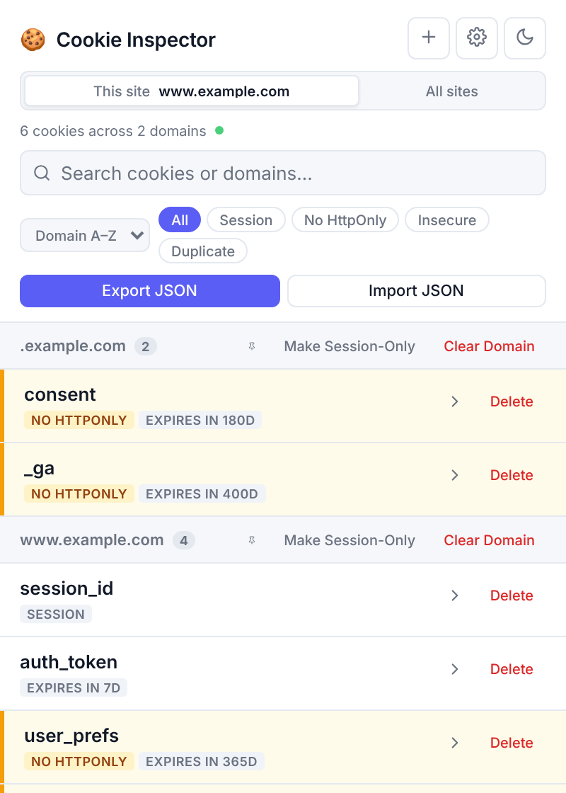
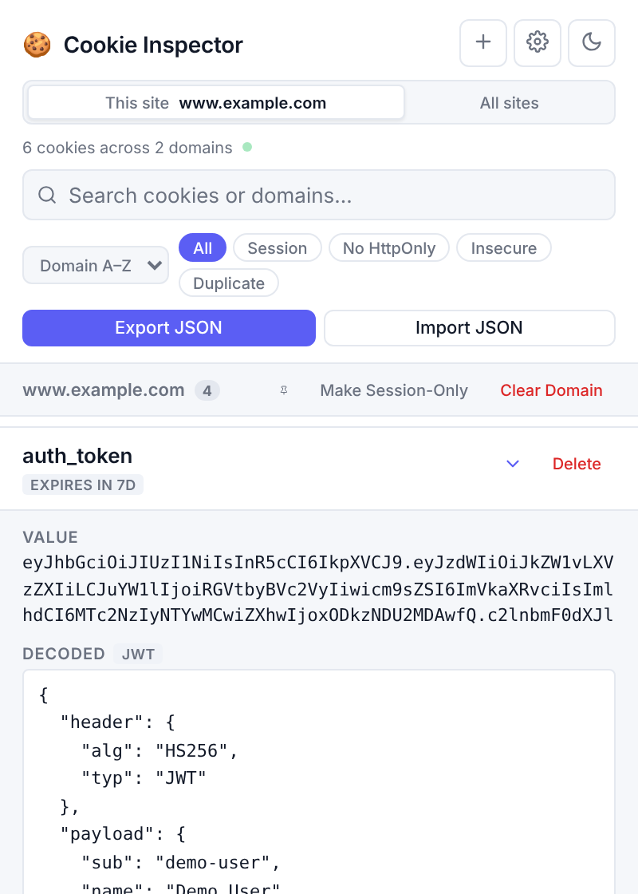
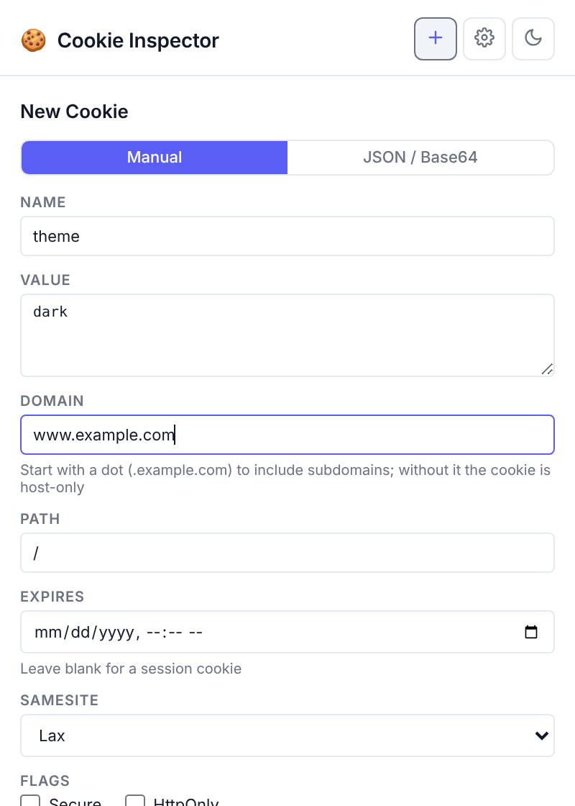
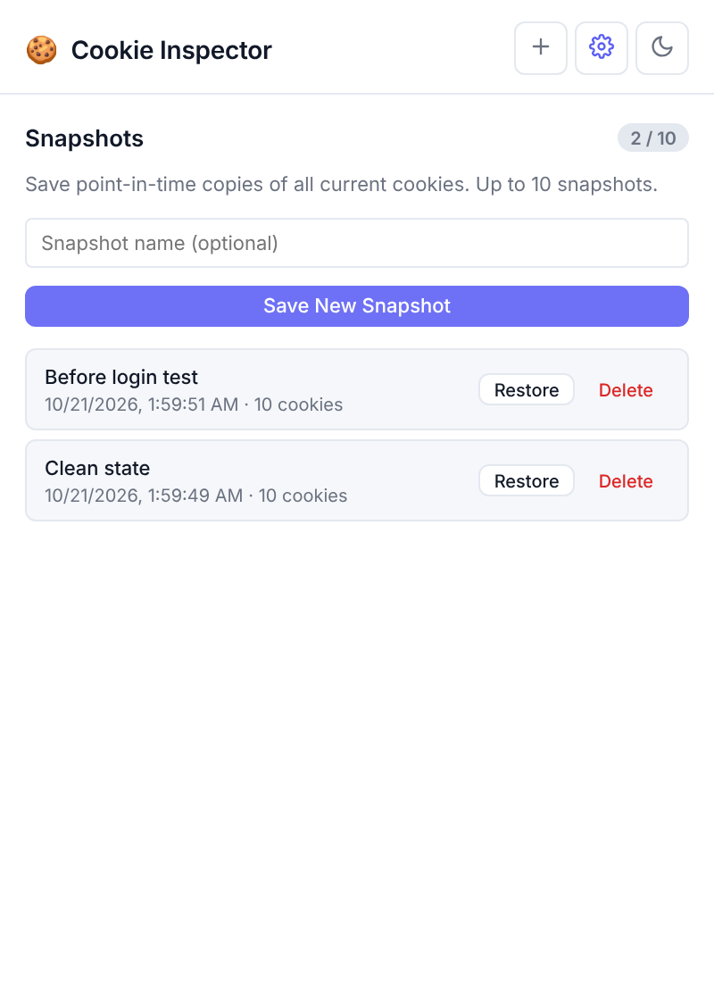

A clean, offline-first Chrome extension that opens on the site you are viewing, decodes JSON, JWT and Base64 values for you, and gives you full control of your cookies.

No account, no setup, no configuration.
A clear, live view of your cookies, with the tools to inspect, edit and control them.
HttpOnly) get an amber bar, which is worth a look on session and login cookies. Cookies without Secure have their own filter, and names repeated across domains are flagged as duplicates.Step-by-step instructions for every feature are in the full guide on GitHub.
The screenshots use demo data.



What it does, and what it does not.
No. Cookie Inspector makes no network requests, has no analytics, and keeps its data in your browser. The font is bundled in the extension.
When the active tab is a website, Cookie Inspector opens on This site. Click All sites at the top to see every cookie. A host-only cookie on a parent or sibling host, such as example.com when you are on www.example.com, only appears under All sites.
No. Delete, Clear Domain and Make Session-Only act immediately. Take a snapshot or export the cookies first if you might want them back. Clear Domain removes every cookie stored for that domain, including ones hidden by a search or filter.
No. Restore sets every cookie from the snapshot again and overwrites matching ones, but it does not delete cookies that were created after the snapshot. A snapshot always contains every cookie in the browser, not just the current site.
Cookie Inspector is built for Google Chrome (Manifest V3). It works on your normal browsing profile; incognito windows are not specifically supported.
Cookie Inspector is built to be entirely offline. No data is ever collected, transmitted, or shared.
Cookie Inspector is a Chrome browser extension that lets you view, inspect, and manage the cookies stored in your browser. It reads cookie data already present on your device and displays it within the extension popup. When you open the popup it also reads the address of your active tab, so it can show that site's cookies first. The address is used only inside the popup while it is open and is never saved or sent anywhere.
We do not collect any data. Specifically:
Cookie Inspector uses Chrome's local storage API solely to save your theme preference (light or dark mode), any cookie snapshots you choose to create, and any domains you choose to pin. This data never leaves your device and can be cleared at any time by removing the extension.
The extension requests the following Chrome permissions:
These permissions are used exclusively to provide the features of the extension and for no other purpose.
If this policy ever changes, the updated version will be published at this URL with a revised date.
Questions or concerns? Open an issue on the GitHub repository.
Last updated: October 2026